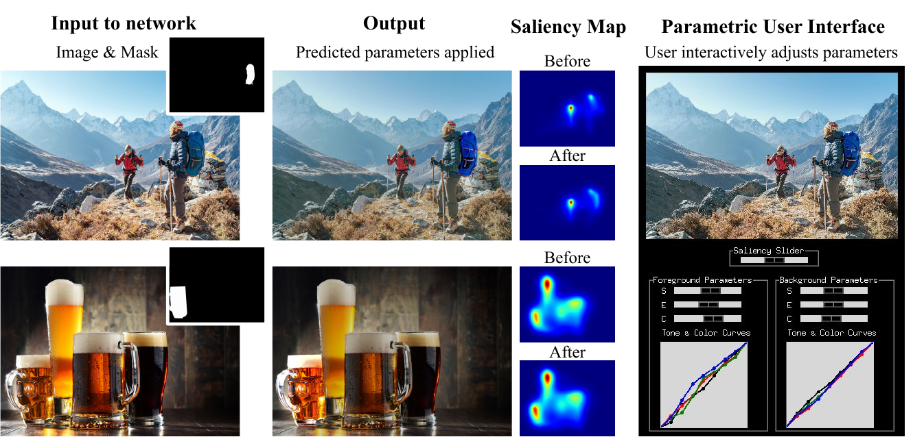
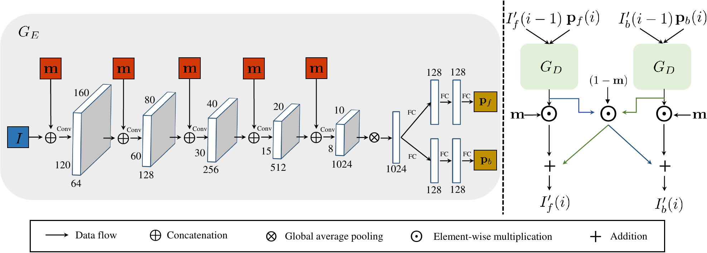
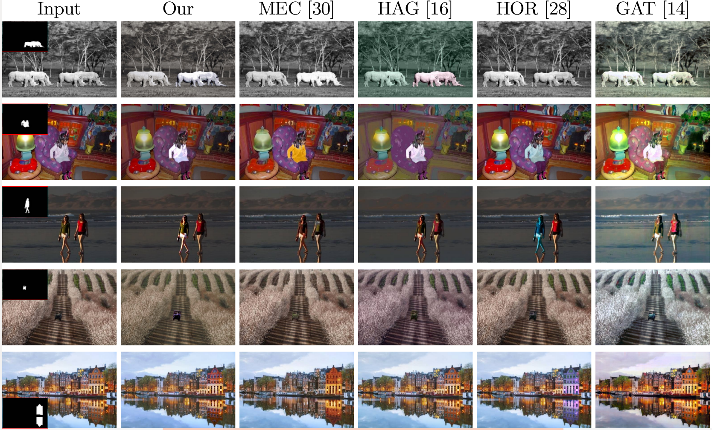
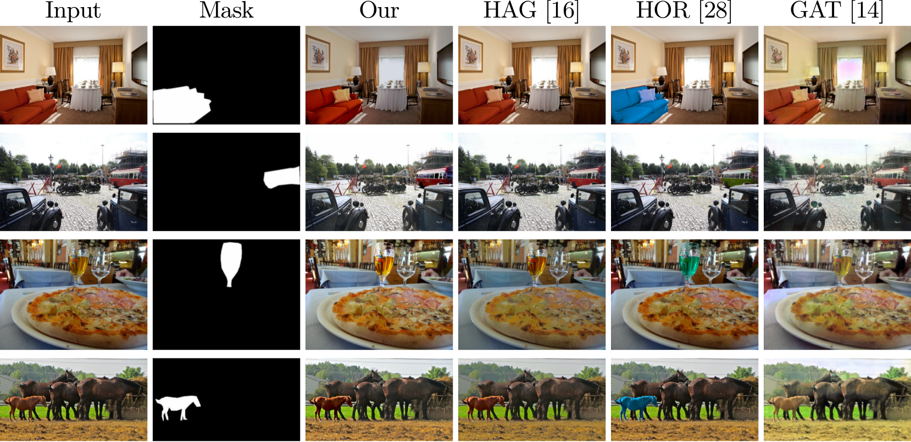
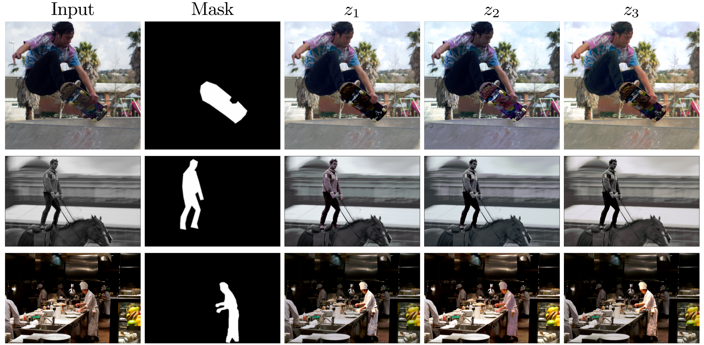
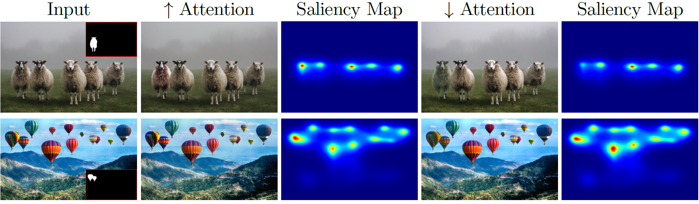

Look here! A parametric learning based approach to redirect visual attention
|
Youssef Alami Mejjati1
|
Celso F. Gomez2
|
Kwang In Kim3
|
Eli Shechtman2
|
Zoya Bylinskii2
|
|
1University of Bath
|
2Adobe Research
|
3UNIST
|
Published in ECCV 2020

GazeShiftNet takes an image and binary mask as input and predicts a set of parameters (sharpening, exposure, contrast, tone, and color curves) that are sequentially applied to the image to produce the output. The transformed image subtly redirects visual attention towards the mask region, seen from the saliency maps. A user can then tune the edits up or down (as shown on the right) at interactive rates, using the saliency slider.
Abstract
Across photography, marketing, and website design, being able to direct the viewer's attention is a powerful tool. Motivated by professional workflows, we introduce an automatic method to make an image region more attention-capturing via subtle image edits that maintain realism and fidelity to the original. From an input image and a user-provided mask, our GazeShiftNet model predicts a distinct set of global parametric transformations to be applied to the foreground and background image regions separately. We present the results of quantitative and qualitative experiments that demonstrate improvements over prior state-of-the-art. In contrast to existing attention shifting algorithms, our global parametric approach better preserves image semantics and avoids typical generative artifacts. Our edits enable inference at interactive rates on any image size, and easily generalize to videos. Extensions of our model allow for multi-style edits and the ability to both increase and attenuate attention in an image region. Furthermore, users can customize the edited images by dialing the edits up or down via interpolations in parameter space. This paper presents a practical tool that can simplify future image editing pipelines.
Video summary
Architecture

GazeShiftNet architecture. Left: The image I and the mask m are encoded through a series of convolutional layers, then the foreground and background parameters are predicted using fully connected network heads. Right: Our decoder applies a series of differentiable functions sequentially using the predicted parameters.
Results

Results on Mechrez datasets. Please see the supplemental material for further results.

Results on CoCoClutter. Please see the supplemental material for further results.
Extensions
We can train our network in a stochastic manner, allowing for multiple editing styles as shown in the figure below:

Sampling different latent vectors in our model results in stochastic variations, all of which achieve the same saliency objective, but with different `styles' of edits.
We can train augment our network, such that it learns to shift the attention towards and away from the subject simultaneously as shown in the figure below:

Using the input image and corresponding mask,
we generate two images, one to shift visual attention towards the mask (col. 2) as seen from the
saliency map in col. 3, and one to shift attention away from the mask (col. 4, saliency map in col. 5).
Our algorithm can seamlessly be applied to video by applying the predicted parameters from the first frame on the entire segmented video:
Left: Original video, Right: Edited video
Acknowledgements
Youssef Alami Mejjati thanks the Marie Sklodowska-Curie grant No 665992, and the Centre for Doctoral Training in Digital Entertainment (CDE), EP/L016540/1. K.~I.~Kim thanks Institute of Information \& communications Technology Planning Evaluation (IITP) grant (No.20200013360011001, Artificial Intelligence Graduate School support (UNIST)) funded by the Korea government (MSIT) .This webpage template was inspired from colorful image colorization.